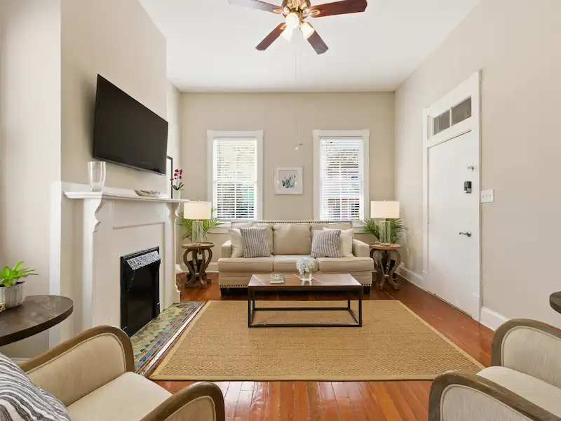
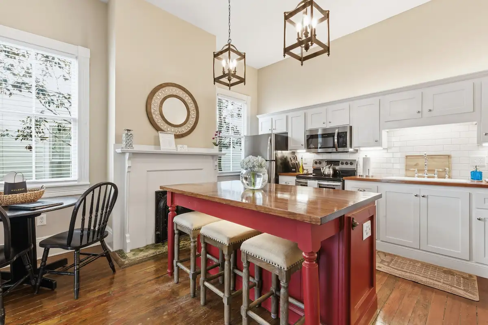
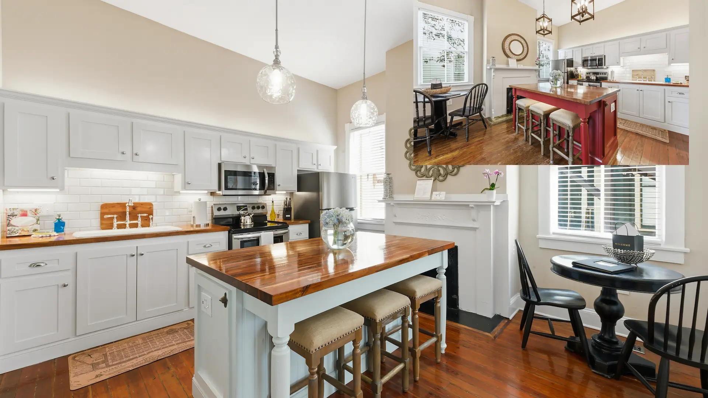
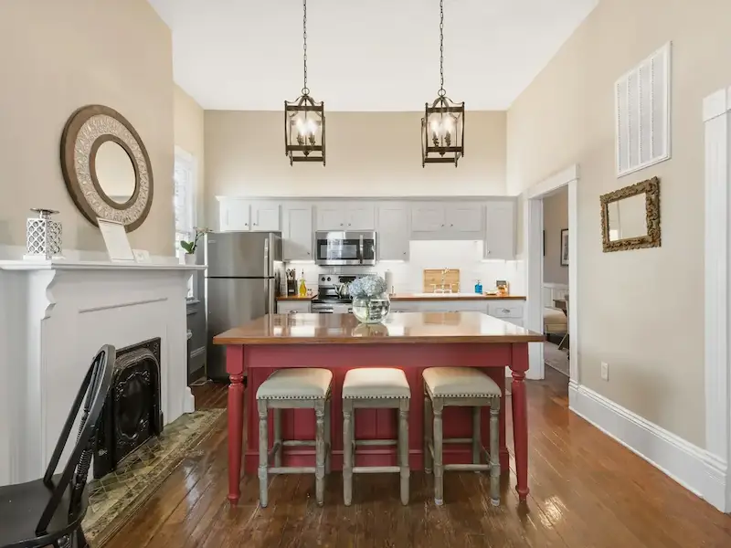

Private Parking Included — Vacation Rental at Forsyth Park
The stress of parking is gone before you arrive.
Parking in Savannah is one of the most-searched and least-solved problems in the city. Street parking in the Victorian District and throughout the historic core is competitive, limited, and subject to sweep zone enforcement — and during events like St. Patrick’s Day or the Savannah Music Festival, it is effectively nonexistent near the park. Most vacation rentals in this part of Savannah do not include private parking. The Wilder House does.
Each suite at The Wilder House includes a dedicated off-street parking spot at no additional charge. Park when you arrive and leave the car for the duration of your stay. Walk four minutes to Forsyth Park. Walk five minutes to Bull Street’s restaurants and bars. The DOT purple shuttle to River Street stops nearby. You will not need the car again until checkout.
The building itself dates to 1898 — one of the most architecturally intact Victorian-era structures in Savannah’s Victorian District. Original heart-pine floors that have been walked on for over 125 years. Eleven-foot ceilings. Ornate Victorian millwork. A genuine historic Savannah vacation rental that has been carefully preserved, not reproduced.
Private Parking — Included. No Fees. No Garages.
One dedicated off-street parking spot per suite, included in your reservation price. Two spots when you book both suites. In the Victorian District, where street spaces disappear by noon on weekends and sweep zones can catch you off guard, having a guaranteed private spot is a genuine advantage most Savannah rentals cannot offer.

Why Choose a Vacation Rental with Parking in Savannah
Private Parking — Included
One dedicated off-street spot per suite. No daily fee, no garage, no meters. Park when you arrive and forget about the car. In Savannah’s Victorian District, where street parking is limited and competitive, this is rare — and genuinely valuable.
Genuine 1898 Historic Building
Not a renovation designed to look historic — an actual 1898 Victorian-era building with original heart-pine floors, 11-foot ceilings, original millwork, and in Suite 316A, an original 1898 fireplace. This is authentic Savannah history, not a replica.
Four Minutes to Forsyth Park
314 East Park Avenue is three blocks from the park’s east side. The 1858 cast-iron fountain, the live oak canopy, the tennis courts, and the Saturday farmers market are a 4-minute walk out the front door. One of the closest vacation rentals to Forsyth Park in Savannah.
Fully Stocked Kitchen
Every suite has a fully stocked kitchen — stainless steel appliances, butcher block counters, ice maker, dishwasher, full cookware, and a coffee maker. Breakfast at the kitchen before walking to the park. Cocktails before dinner on Bull Street. You’re never paying bar prices for things you can make here.
4.97 Stars • 209 Reviews
Guest Favorite status and Airbnb Superhost recognition across 209 reviews and 4.97 average stars. Three years of consistent five-star hosting. The rating reflects the space, the location, the parking, and the responsiveness — all of it.
Self Check-In — No Coordination
Smart lock on both suites. Your access code arrives before you do. Check in at 4:00 PM, check out at 11:00 AM. Come back from dinner or an evening walk through the squares at any hour without waiting for anyone. Both front and rear entrances accessible.
Book Your Vacation Rental with Private Parking
Both suites include a dedicated off-street parking spot. Book one for a group of up to 4, or book both for a group of up to 8 — with two parking spots, two full kitchens, and four bedrooms.

Suite 314A
From $195 / night
Original heart-pine floors, soaring 11-foot ceilings, and three blocks to Forsyth Park. Fully stocked kitchen, private off-street parking. One of Savannah’s highest-rated historic vacation rentals.
View Suite 314ASuite 316A
From $195 / night
Haint blue kitchen island, original fireplace, ornate Victorian millwork. Three blocks from Forsyth Park in Savannah’s most storied neighborhood. Fully stocked kitchen, private parking included.
View Suite 316A
Book Both Suites
From $395 / night — 4 beds, 2 kitchens
Both suites, side by side in the same 1898 building. Four bedrooms, two full kitchens, two baths, two private parking spots. The full Wilder House experience — the best way to bring a group to Savannah.
View Group Details
Historic 1898 Victorian — 125+ Years of Authentic Savannah
The Wilder House was built in 1898 as part of Savannah’s Victorian District expansion — when the neighborhood was being developed as a residential extension of the historic downtown. The building is an original Victorian quadplex, unchanged in its essential structure for over 125 years. What you see from East Park Avenue is what Savannah looked like at the turn of the 20th century.
Both suites have been fully modernized for contemporary comfort while preserving every original feature worth keeping. That tension — between what was built in 1898 and what a guest needs in 2026 — is what makes The Wilder House different from any hotel or modern rental in Savannah.
- Original heart-pine floors throughout both suites — 125+ years of patina
- 11-foot ceilings characteristic of Victorian-era Savannah construction
- Original 1898 decorative fireplace in Suite 316A — authentic Victorian millwork surround
- Haint blue porch ceiling — a Savannah Lowcountry tradition dating to the 19th century
- Located in the Victorian District, listed on the National Register of Historic Places
- Licensed Savannah short-term vacation rentals: SVR-01357 & SVR-01358
Walk Everywhere From Your Parking Spot — Forsyth Park Vacation Rental
314–316 East Park Avenue puts you in the Victorian District — the quiet, residential side of Savannah’s historic core. You’re four minutes from Forsyth Park, five minutes from Bull Street’s restaurants, and a DOT shuttle ride from River Street. Everything worth doing in Savannah is walkable or a short ride away. You will not need the car again after you park it on arrival.
-
Forsyth Park — 4 Minutes on Foot
The iconic 30-acre park with the 1858 cast-iron fountain is three blocks away. Morning walks, afternoon photos, and the Saturday farmers market — all without moving the car.
-
Bull Street Bars & Restaurants — 5–10 Minutes
Savannah’s best local restaurants and cocktail bars are a short walk north. Local 11ten, Bull Street Taco, and a dozen others are within easy walking distance.
-
River Street — Free DOT Shuttle
The free DOT purple shuttle runs to River Street and City Market with a stop nearby. Waterfront bars, restaurants, and the Savannah River — no parking, no Uber, no cost.
-
Broughton Street — 10–15 Minutes
Savannah’s main shopping and nightlife corridor is a 10–15 minute walk north. Boutiques, restaurants, rooftop bars, and the restored downtown retail district.
Vacation Rental with Parking — FAQ
Does The Wilder House include private parking?
Yes. Every suite includes one dedicated off-street parking spot at no extra charge. Suite 314A has its own spot; Suite 316A has its own spot. When booking both suites together, your group has two private spaces — no separate fees, no garages, included in every reservation.
Is parking hard to find near Forsyth Park?
Yes — significantly. Street parking in the Victorian District is limited, competitive, and subject to sweep zone enforcement. During St. Patrick’s Day, the Savannah Music Festival, and other major events, it is effectively nonexistent near the park. The Wilder House’s private spots are one of the most practical advantages of staying here.
How far is The Wilder House from Forsyth Park?
Three blocks — a 4-minute walk. The address is 314–316 East Park Avenue, the street that runs along the park’s east side. You can see the live oak canopy from the front of the building. As close as a Savannah vacation rental gets to the park.
What original features are preserved?
Heart-pine floors throughout both suites, 11-foot ceilings, ornate Victorian millwork, and in Suite 316A, an original 1898 fireplace. The haint blue porch ceiling is original to the Lowcountry tradition. Built in 1898 and carefully preserved for 125+ years.
Can I book one suite or both?
Both options are available. Suite 314A and Suite 316A can each be booked individually (sleeps 4, 1 parking spot each). For groups of 5–8, both suites together give you 4 bedrooms, 2 full kitchens, 2 baths, and 2 private parking spots. See the group rental page.
What is the Victorian District in Savannah?
The Victorian District is a historic neighborhood directly south of Forsyth Park — one of the most architecturally intact Victorian-era neighborhoods in the American South. Quieter and more residential than the tourist-heavy downtown squares, while keeping everything walkable. Read the full neighborhood guide.
Are there any additional parking fees?
No. The private parking spot is included with each suite reservation at no additional charge. The price in your Airbnb booking is what you pay — no parking fees, no resort fees, no hidden charges. One spot per suite, included.
What is the STVR license for The Wilder House?
The Wilder House operates under City of Savannah Short-Term Vacation Rental licenses SVR-01357 (Suite 314A) and SVR-01358 (Suite 316A), in full compliance with all City of Savannah regulations.
Reserve Your Savannah Vacation Rental with Parking Now
The Wilder House books fast — especially spring weekends, fall weekends, and St. Patrick’s Day. Check availability now or reach out with any questions about the suites, the parking, or your dates.